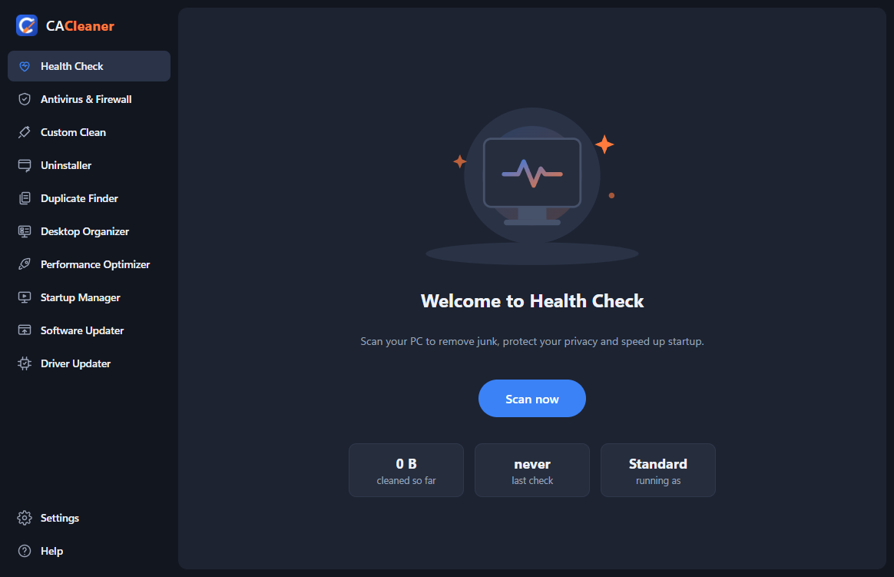
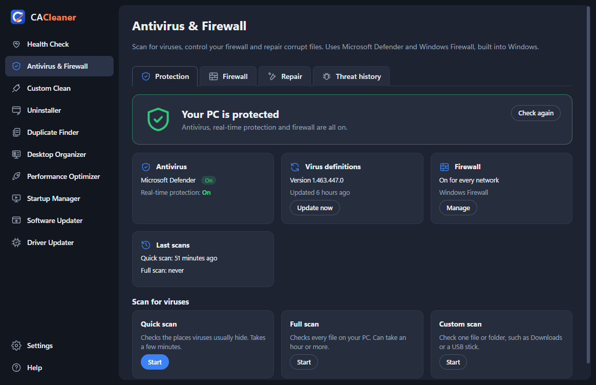
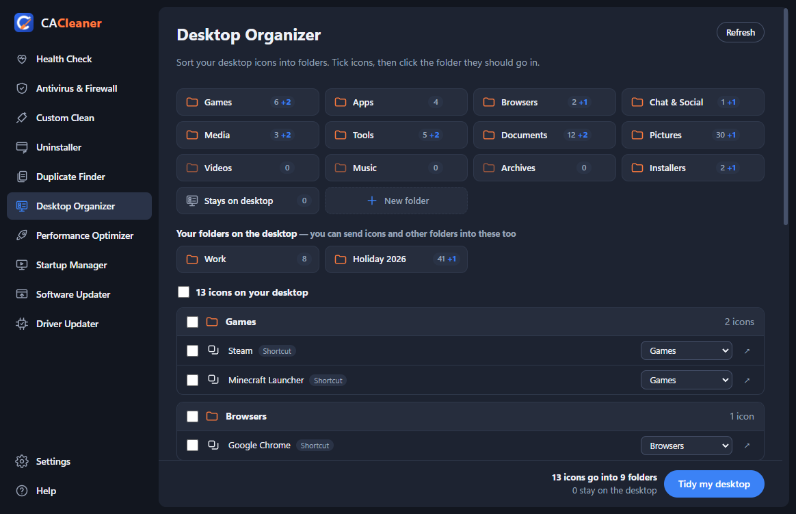
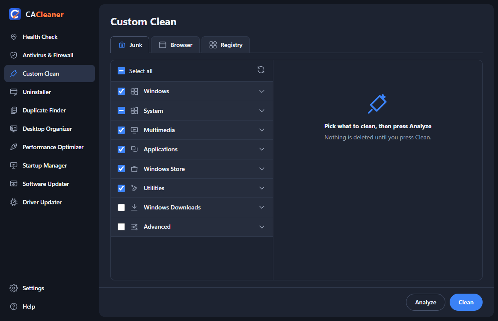

A cleaner, safer PC
in one app
CACleaner clears out junk, scans for viruses, controls your firewall, repairs corrupt Windows files, tidies your desktop and keeps your apps up to date. Simple, safe, and completely free, Pro included.

Everything your PC needs
Cleaning, virus protection, firewall, repairs and a tidy desktop, all free. Pro adds the extras that keep your PC in top shape automatically, and it costs nothing either.
Health Check
One scan finds browser leftovers, junk files and things slowing your PC down, and fixes them step by step.
Antivirus
Quick, full or custom virus scans using Microsoft Defender's engine, with up-to-date virus definitions and a full threat history.
Firewall
Turn Windows Firewall on or off for home, work and public Wi-Fi, and block any app from the internet in one click.
Repair
Finds and fixes corrupt Windows system files (SFC and DISM), and checks your drives for errors and health.
Custom Clean
Pick exactly what to clean: temp files, caches, the Recycle Bin, and browser history in Chrome, Edge, Firefox, Brave and Opera.
Desktop Organizer
Sorts your desktop icons into folders like Games, Apps and Documents. Tick icons, click a folder, done. Keeps it tidy for you.
Uninstaller
See every program with its size and install date, and remove the ones you don't use.
Duplicate Finder
Finds exact copies of files byte for byte. Removed copies go to the Recycle Bin.
Startup Manager
Turn off apps that start with Windows so your PC boots faster. Every change can be undone.
Registry cleanerPRO
Removes leftovers pointing at deleted programs, with a backup saved before every fix.
Performance OptimizerPRO
See which apps use the most memory and close the ones you don't need.
Software UpdaterPRO
Finds outdated apps and updates them all in one go.
Driver UpdaterPRO
Shows driver updates Windows Update has for your hardware.
Scheduled cleaningPRO
CACleaner cleans quietly on the schedule you choose, without you lifting a finger.
Your account, any PC
Sign in on any PC and your plan comes with you. Nothing to re-enter after reinstalling Windows.
Automatic updates
CACleaner keeps itself up to date, so you always have the newest version.
Antivirus & Firewall
Real protection, built on Microsoft Defender and Windows Firewall, the same engines Windows trusts.
- See at a glance if your PC is protected, and fix anything that isn't with one click.
- Quick, full or custom scans of any file, folder or USB stick. Threats are quarantined.
- Update virus definitions and see everything that's ever been caught.
- Turn the firewall on or off per network, and block any app from the internet.
- Repair corrupt Windows files and check your drives for errors.
- Already use Norton or Avast? CACleaner shows them too and works alongside.

A tidy desktop
Desktop Organizer sorts the clutter into folders and keeps it that way.
- Every icon gets a sensible folder: Games, Apps, Browsers, Media, Documents and more.
- Tick icons, click a folder, press Tidy. Add your own folders or use ones you already have.
- Move whole folders into other folders too, and see how many items each one holds.
- Keep my desktop tidy sorts new icons by themselves, even with CACleaner closed.
- Changed your mind? Undo puts everything back.

Safe by design
Cleaning should never break anything. CACleaner is careful by default.
- Nothing is deleted until you press Clean, and files in use are skipped.
- Temporary files from the last 24 hours are left alone.
- Cookies are off by default, so you don't get signed out of websites.
- Duplicates and old downloads go to the Recycle Bin, not straight to deletion.
- Every registry fix is backed up first and can be undone with a double-click.
- Desktop Organizer only moves icons, never deletes them, and Undo puts them back.
- No adverts, no tracking, nothing about your files leaves your PC.

It's all free
No card, no catch. Create a free account in the app, then upgrade to Pro in My Account.
CACleaner Free
- Health Check
- Antivirus scans and Firewall
- Repair corrupt Windows files
- Desktop Organizer
- Custom Clean (junk and browsers)
- Uninstaller
- Duplicate Finder
- Startup Manager
- Registry cleaner
- Performance Optimizer
- Software and Driver Updater
- Scheduled cleaning
CACleaner Pro
- Everything in Free
- Registry cleaner with backups
- Performance Optimizer
- Software Updater
- Driver Updater
- Scheduled automatic cleaning
- Renew free every year
Create your free account when you open CACleaner. You start on Free; press Upgrade to Pro in Settings → My Account for a year of Pro. When the year is up, renew it there for another one. Sign in on any PC and your Pro comes with you. Nothing to pay, ever.
Questions
How do I get Pro?
Open CACleaner and create a free account, then go to Settings → My Account and press Upgrade to Pro. Pro turns on straight away for a year.
What happens after a year?
Press Renew free in Settings → My Account and you get another year. You can renew in the last 30 days too.
Can I use Pro on more than one PC?
Yes. Install CACleaner on each PC and sign in with the same account. Your Pro comes with you.
Why do I need an account?
Your Pro license lives with your account, so it works on every PC you sign in on and isn't lost if you reinstall Windows. We only keep your email, name and when your Pro ends.
Is the antivirus real?
Yes. CACleaner scans with Microsoft Defender's engine, the antivirus built into Windows, with Microsoft's virus definitions updated several times a day. If you use Norton, Avast or another antivirus, it keeps protecting you and CACleaner shows it too.
Will Desktop Organizer delete anything?
No. It only moves icons and folders into folders on your desktop. Undo puts everything back where it was.
Will cleaning delete my files?
No. CACleaner only cleans temporary files, caches and the other things you tick. Your documents, photos and music are never touched by Custom Clean.
Windows says "Windows protected your PC". Is it safe?
That message appears for apps from new publishers. Click "More info", then "Run anyway".
Which Windows versions are supported?
Windows 10 and Windows 11, 64-bit.